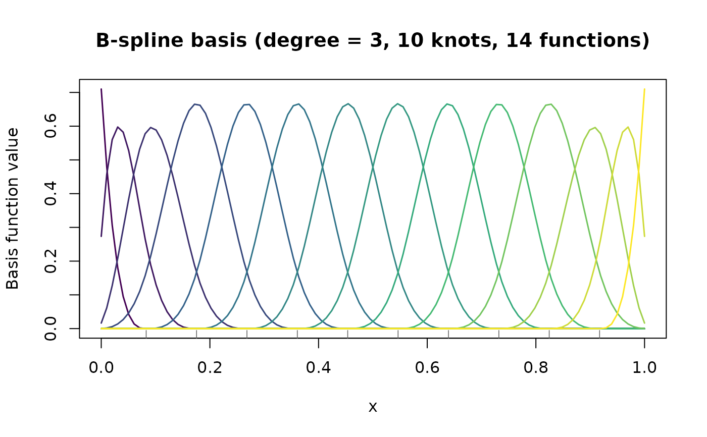

Creates a B-spline basis matrix evaluated at a set of points, together with
a difference penalty matrix suitable for P-spline smoothing. This is the
core building block for all functional data representations in funcrop.
Usage
bspline_basis(
x,
n_knots = 10L,
degree = 3L,
knot_type = c("equally_spaced", "quantile", "custom"),
knots = NULL,
boundary = NULL,
penalty_order = 2L
)Arguments
- x
Numeric vector of evaluation points (e.g., time, wavelength, depth). Must contain at least 2 unique values and no
NAor non-finite values.- n_knots
Integer; number of internal knots. Default is 10. Must be at least 1. The total number of basis functions is
n_knots + degree + 1.- degree
Integer; polynomial degree of the B-spline. Default is 3 (cubic). Must be >= 0.
- knot_type
Character; method for placing internal knots. One of
"equally_spaced"(default),"quantile", or"custom". If"custom", theknotsargument must be supplied.- knots
Numeric vector of internal knots. Required when
knot_type = "custom", ignored otherwise. Must lie strictly within the boundary knots.- boundary
Numeric vector of length 2 giving the boundary knots (lower, upper). Defaults to
range(x)extended by 1% on each side.- penalty_order
Integer; order of the difference penalty matrix. Default is 2 (second-order differences, penalising curvature). Must be at least 1 and less than
n_basis.
Value
An S3 object of class "fda_basis" (a list) containing:
- B
Basis matrix (n x p), where n =
length(x)and p =n_basis=n_knots + degree + 1.- knots
Numeric vector of internal knots used.
- boundary
Numeric vector of length 2; boundary knots.
- degree
Integer; polynomial degree.
- penalty_order
Integer; order of the difference penalty.
- P
Penalty matrix (p x p); sparse
Matrixof classdgCMatrix. Constructed as D'D where D is the difference matrix of the specified order.- x
Numeric vector; the original evaluation points.
- n_basis
Integer; total number of basis functions.
- knot_type
Character; knot placement method used.
Details
The basis matrix is computed using splines::splineDesign(), which handles
boundary evaluation correctly. Knots are augmented with repeated boundary
knots as required by the B-spline recursion.
The penalty matrix \(P = D_d^T D_d\) encodes a discrete approximation to the d-th derivative penalty, where \(D_d\) is the d-th order difference matrix operating on the B-spline coefficients (Eilers & Marx, 1996).
References
Eilers, P.H.C. and Marx, B.D. (1996). Flexible smoothing with B-splines and penalties. Statistical Science, 11(2), 89–121.
See also
make_penalty() for standalone penalty construction,
make_Zspline() for mixed model reparameterisation,
tensor_bspline_basis() for 2D tensor product bases.
Examples
# Basic cubic B-spline basis with 10 internal knots
x <- seq(0, 1, length.out = 100)
basis <- bspline_basis(x, n_knots = 10, degree = 3)
print(basis)
#> B-spline basis (fda_basis)
#> Degree: 3
#> Internal knots: 10 (equally_spaced)
#> Basis functions: 14
#> Eval. points: 100
#> Boundary: [-0.01, 1.01]
#> Penalty order: 2
#> Basis matrix dim: 100 x 14
# Quantile-based knot placement (better for skewed data)
set.seed(42)
x_skew <- sort(rbeta(200, 2, 5))
basis_q <- bspline_basis(x_skew, n_knots = 8, knot_type = "quantile")
# \donttest{
# Visualise basis functions
plot(basis)

# }